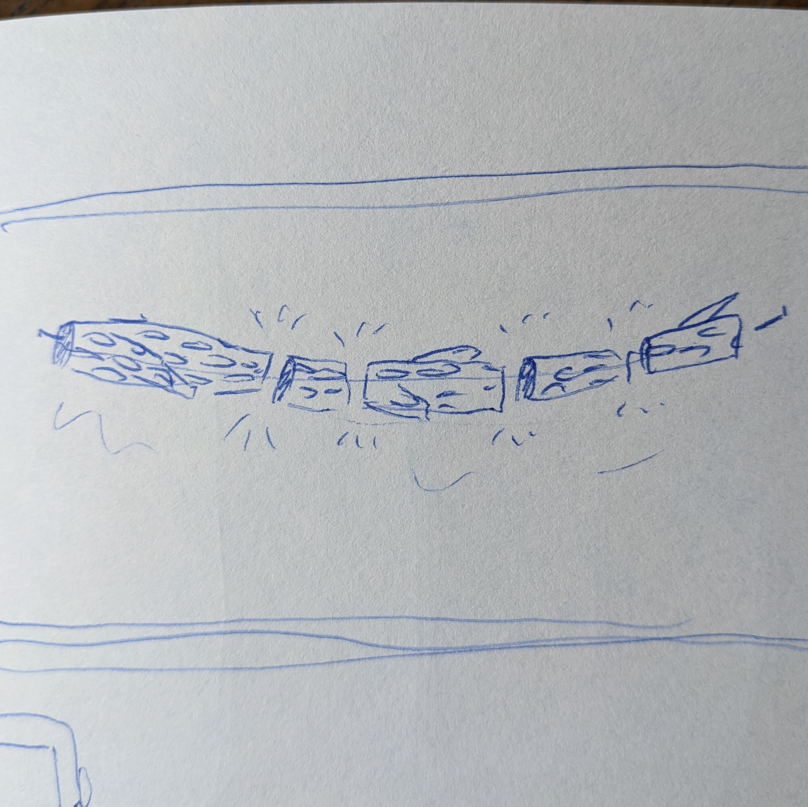

This week, I worked on creating one printable mesh from two separate STLs and getting started on my lamp project. I'll cover both projects over two parts in the documentation below!
Originally for this mesh assignment, I wanted to combine two STLs of classical sculptures to create a silly phone stand. I learned some important lessons along the way on checking if a mesh is a "good mesh" before you start working, and *why* it's challenging to work with very detailed meshes. After too much fiddling with my original plan, I pivoted and was able to successfully combine two simpler meshes.
First, I imported these awesome sculpture STLs into rhino. The original files had ~millions of triangles, so I reduced them to about 150,000 each (which turned out to be unweildy, still!) I didn't check to see if these meshes were "good meshes" when I imported them- I wish now that I had. After resizing and manipulating their mesh, it would have been good to know if the issues came from me or the original files.
I took measurements of my phone and used them to size and space the two statues. I also built a phone stand that could accomodate my phone in it's case- while plugged into the charger. Then, I used the "points on" command to manipulate their mesh so it didn't interfere with the arms that held the phone OR extend beyond the base I built for the stand. (I am sure this manipulation contributed to my "bad mesh" later down the road.)
I converted my polysurface phone stand into a mesh, then tried several different methods (like BooleanMeshUnion, Join, etc) to merge the three pieces into a printable surface. I tried to repair the mesh afterwards, but to no avail. I think it was such a mess at that point, I'd need to try again with freshly imported meshes- then proceed with more caution while manipulating the mesh.

I decided to try again with simpler meshes to see if I could get it to work. On thingiverse, I found two pieces of simpler geometry that I wanted to combine in order to create a personalized plant clip (photos below). I checked to be sure that both of the meshes I imported were "good meshes" before starting to work. (Several files I found on thingiverse were not!)

First, I removed parts of the flower FOB that I didn't want. I placed the flower where I wanted it to attach to the plant clip, and used BooleanMeshUnion to combine the shapes. After, I used RepairMesh to check that it was a good mesh. Finally, I exported the mesh as an STL- it passed all the rapid prototyping checks!
For the lamp project, I was inspired by John Grade's "Middle Fork" piece- now on display at the SAM. I'm drawn to the intersection of geometric and organic shapes, and wanted to incorporate that into my lamp. I also thought it'd be an excellent opportunity to work modularly with my printer(to avoid long prints and sizing limits from the printer).


I

I generated supports under each of the nested hearts, so they could be deconstructed after printing.




I generated supports under each of the nested hearts, so they could be deconstructed after printing.
I generated supports under each of the nested hearts, so they could be deconstructed after printing.